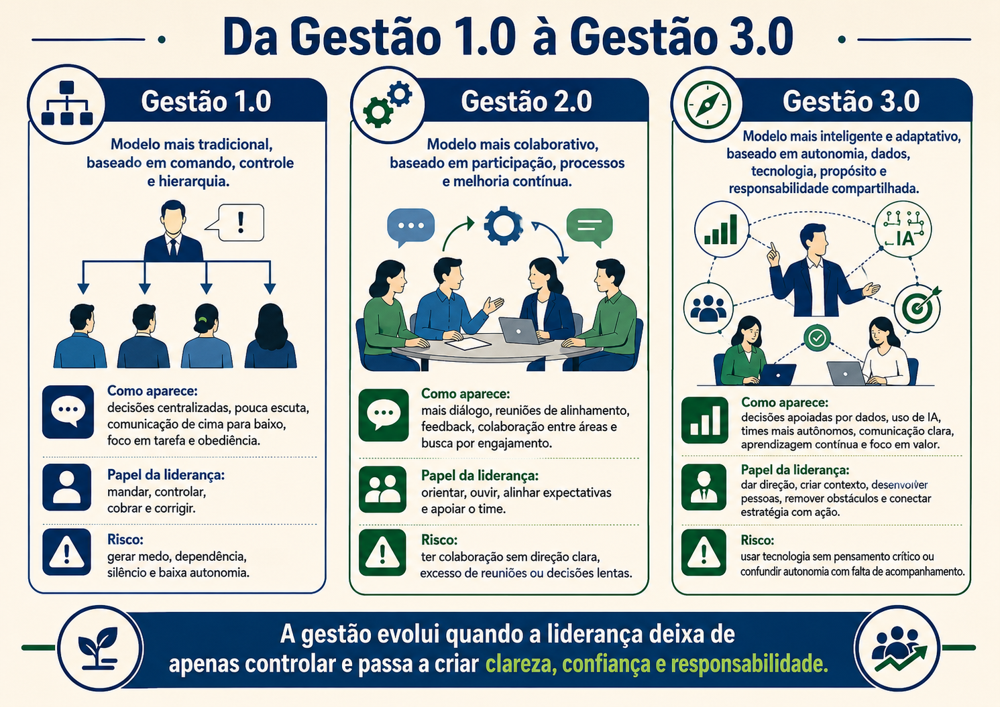
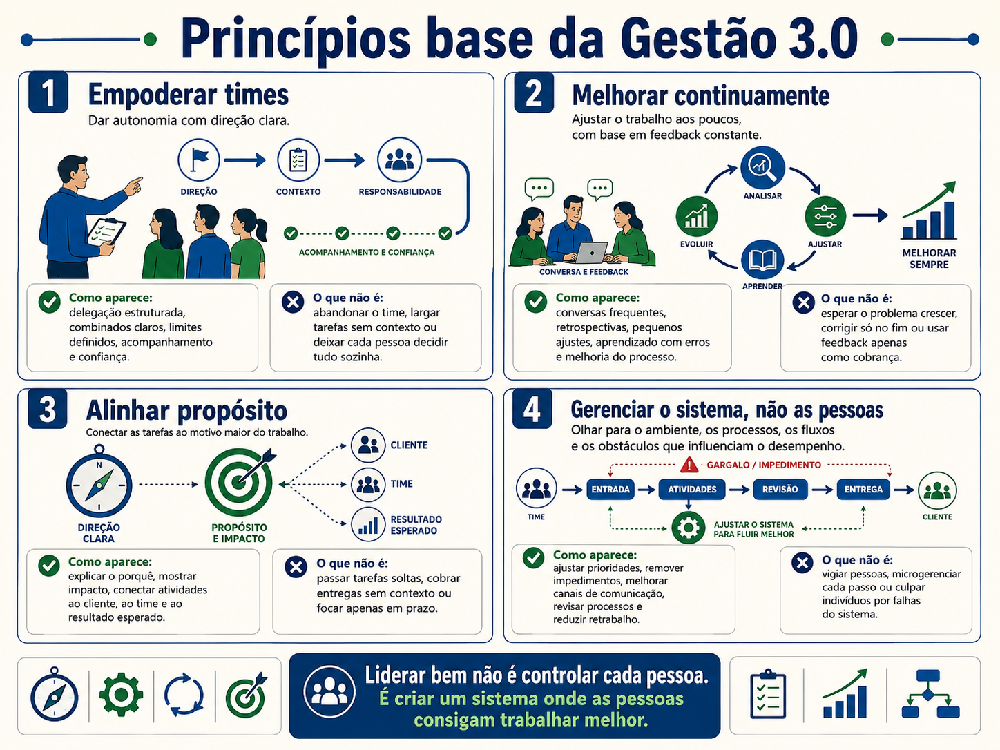
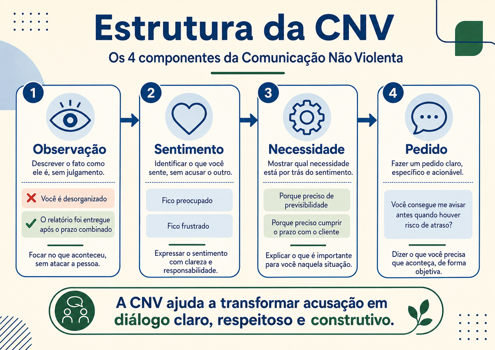

Autoconhecimento e adaptação da comunicação
Uma conversa sobre temperamentos, perfis comportamentais e o cuidado de ajustar a fala sem rotular pessoas.
Bom dia, pessoal. Pensa em uma reunião em que quatro pessoas recebem a mesma notícia: o prazo mudou e a entrega ficou mais apertada. Uma pessoa reage na hora e já quer decidir o que será cortado. Outra começa a conversar e tenta animar o grupo. Outra fica quieta, observa os detalhes e pergunta quais riscos foram analisados. Outra tenta acalmar o ambiente e evitar conflito. A notícia foi a mesma, mas as reações foram diferentes.
Isso acontece porque as pessoas não funcionam todas do mesmo jeito. Cada uma tem história, ritmo, forma de decidir, sensibilidade, medo, energia, preferência e jeito de se comunicar. Quando a liderança trata todo mundo como se fosse igual, perde precisão. Quando começa a observar os perfis, consegue adaptar melhor a conversa.
Temperamento é uma forma simples de olhar tendências de comportamento. Tendência não é sentença. Ninguém fica preso a um rótulo. A ideia é perceber padrões para melhorar a comunicação. Se eu sei que uma pessoa gosta de objetividade, eu evito rodeios desnecessários. Se sei que outra precisa de contexto e segurança, eu explico melhor o caminho.
Os quatro temperamentos mais citados são colérico, sanguíneo, fleumático e melancólico. O colérico tende a ser direto, rápido, orientado a resultado e decisão. O sanguíneo tende a ser comunicativo, sociável, espontâneo e animado. O fleumático tende a ser calmo, estável, conciliador e paciente. O melancólico tende a ser analítico, detalhista, profundo e cuidadoso.
Pode virar, se for usado errado. Por isso o cuidado é essencial. Temperamento não deve ser usado para encaixar pessoas em caixinhas. Deve ser usado para observar necessidades de comunicação. A pergunta não é “que rótulo eu coloco nessa pessoa?”. A pergunta melhor é “que tipo de abordagem ajuda essa pessoa a entender, participar e decidir melhor?”.

Vamos olhar com calma. Com uma pessoa mais colérica, a comunicação precisa ser objetiva. Ela costuma valorizar decisão, autonomia e resultado. Se você faz uma explicação longa demais antes de chegar ao ponto, ela pode ficar impaciente. Isso não significa que você precisa ser seco. Significa que precisa começar pelo essencial: o problema, a decisão necessária, o impacto e o próximo passo.
Com uma pessoa mais sanguínea, a comunicação pode usar mais interação. Ela costuma gostar de troca, movimento e conexão. O cuidado é não deixar a conversa perder foco. Nesse caso, ajuda combinar o espaço de fala com um fechamento claro: ótimo ponto, vamos registrar isso e voltar para a decisão que precisamos tomar.
Com uma pessoa mais fleumática, a comunicação precisa trazer segurança. Ela tende a evitar conflito e pode demorar a se posicionar. Se for pressionada de forma agressiva, pode se fechar. Ajuda dar contexto, explicar o motivo da mudança, abrir espaço para opinião e deixar claro que discordar com respeito é permitido.
Com uma pessoa mais melancólica, a comunicação precisa trazer dados, critério e qualidade. Ela tende a perguntar detalhes e enxergar riscos. Isso pode ser muito valioso. O cuidado é não deixar a análise virar paralisia. Ajuda dizer: seus pontos são importantes, vamos separar o que impede a decisão agora do que pode ser tratado como melhoria depois.
Adaptar a comunicação não é manipular.
É entregar a mensagem de um jeito que o outro consiga compreender melhor.
Uma forma simples de identificar tendências é observar reação sob pressão. Quando recebe uma crítica, a pessoa reage na hora? Depois continua pensando naquilo? Se reage rápido e guarda, pode ter traços coléricos. Se reage rápido e depois esquece, pode ter traços sanguíneos. Se não reage na hora, mas fica remoendo, pode ter traços melancólicos. Se não reage e não se abala tanto, pode ter traços fleumáticos. Isso é apenas um recurso didático, não um diagnóstico.
Também apareceu a ideia de defeito dominante. Defeito dominante é o ponto que mais atrapalha a pessoa quando ela exagera uma tendência. O colérico pode exagerar na pressão. O sanguíneo pode dispersar. O fleumático pode evitar posicionamento. O melancólico pode travar na crítica ou na busca de perfeição.
O objetivo de identificar esse ponto não é culpar a pessoa. É ajustar comportamento. Se eu sei que meu excesso é pressão, preciso cuidar do tom. Se meu excesso é dispersão, preciso cuidar do foco. Se meu excesso é omissão, preciso praticar posicionamento. Se meu excesso é análise sem fim, preciso aprender a decidir com informação suficiente.

O DISC é outro modelo usado para autoconhecimento. Ele observa tendências de dominância, influência, estabilidade e conformidade. Dominância tem relação com decisão e resultado. Influência tem relação com comunicação e conexão. Estabilidade tem relação com cooperação e previsibilidade. Conformidade tem relação com regra, qualidade e precisão.
Para que serve o DISC? Serve para entender como a pessoa tende a agir no trabalho, especialmente em comunicação, decisão, pressão e relacionamento. Como usar? O ideal é aplicar com ferramenta estruturada, RH ou profissional habilitado. Testes gratuitos podem ajudar como primeira leitura, mas não devem ser tratados como verdade absoluta.
Também existe o Big Five, ou Cinco Grandes Fatores da Personalidade. É um modelo mais usado em psicologia para observar abertura a experiências, conscienciosidade, extroversão, amabilidade e estabilidade emocional. Traduzindo de forma simples, ele ajuda a pensar se a pessoa tende a buscar novidades, ser organizada, se expressar mais, cooperar mais e lidar melhor ou pior com pressão emocional.
No curso, esses modelos entram como repertório, não como laudo. A liderança não deve sair distribuindo diagnóstico. O uso correto é olhar para si e perguntar: como meu perfil influencia a forma como eu escuto, falo, decido, dou feedback e conduzo conflitos?
Agora vamos trazer isso para o cotidiano. Uma liderança muito direta pode achar que está sendo clara, mas o time pode sentir dureza. Uma liderança muito acolhedora pode achar que está cuidando da relação, mas o time pode sentir falta de direção. Uma liderança muito analítica pode trazer segurança, mas também pode atrasar decisões. Uma liderança muito tranquila pode pacificar, mas também pode evitar conversas necessárias.
Autoconhecimento é perceber esse padrão em si. Não é ficar se explicando pelo perfil. Uma frase perigosa seria: eu sou assim mesmo. Essa frase fecha a porta de desenvolvimento. Uma frase melhor seria: minha tendência é essa, então preciso cuidar deste ponto.
Na prática, podemos adaptar a comunicação como chave e fechadura. Uma única chave não abre todas as portas. Uma única forma de falar também não alcança todas as pessoas. Com algumas pessoas, começamos pelo dado. Com outras, pelo contexto. Com outras, pela decisão. Com outras, pela segurança. O conteúdo pode ser o mesmo, mas a porta de entrada muda.
Teste de temperamentos e DISC, use apenas como ponto de reflexão. O mais importante é cruzar autoavaliação, percepção de quem convive com você e observação do comportamento real.

Um cuidado importante ao falar de temperamentos é lembrar que pessoas mudam de acordo com contexto. Alguém pode ser muito direto no trabalho e muito sensível em casa. Pode ser calmo em uma reunião comum e ficar intenso quando se sente injustiçado. Por isso, perfil não deve ser usado como prisão. Ele é uma pista, não uma sentença.
Na prática, a liderança observa comportamento recorrente. Recorrente é aquilo que se repete. Se uma pessoa sempre pede dados antes de decidir, talvez precise de mais base analítica. Se uma pessoa sempre tenta conectar o grupo, talvez funcione melhor com espaço de troca. Se uma pessoa evita conflito, talvez precise de segurança para se posicionar. Se uma pessoa decide rápido demais, talvez precise de uma pausa para ouvir riscos.
A adaptação da comunicação começa antes da fala. Antes de conversar com alguém, pergunte: essa pessoa precisa de objetividade, contexto, dado, acolhimento ou tempo para processar? Essa pergunta evita aplicar o mesmo formato para todo mundo. O mesmo pedido pode ser feito de formas diferentes sem perder verdade.
Com alguém colérico, uma conversa longa e sem direção pode gerar irritação. Uma forma melhor é começar pelo objetivo: precisamos decidir entre duas alternativas até 16h. A opção A reduz prazo, mas aumenta risco. A opção B exige mais tempo, mas protege qualidade. Minha recomendação é B por este motivo. Depois disso, abra para perguntas.
Com alguém sanguíneo, a conversa pode ganhar energia rapidamente. Isso ajuda em engajamento, mas pode dispersar. A liderança pode reconhecer a contribuição e organizar: gostei da ideia, vamos anotar como alternativa. Agora precisamos fechar o primeiro ponto. Assim, a pessoa se sente ouvida e o grupo mantém foco.
Com alguém fleumático, pressão agressiva pode gerar fechamento. Uma abordagem melhor é dar previsibilidade: quero ouvir sua visão sobre essa mudança. Não precisa responder agora se precisar de alguns minutos. O ponto principal é entender quais riscos você enxerga. Isso cria segurança para uma pessoa que talvez evite confronto.
Com alguém melancólico, improviso demais pode gerar desconforto. Uma forma melhor é trazer critério: temos estes dados, estas restrições e esta decisão. Sei que ainda existem detalhes, então vamos separar o que precisa ser resolvido agora do que pode entrar como melhoria. Assim, a análise vira apoio e não bloqueio.
O DISC ajuda a pensar de forma parecida. Uma pessoa com traço de dominância pode gostar de autonomia. Uma com influência pode precisar de interação. Uma com estabilidade pode valorizar segurança. Uma com conformidade pode pedir regra e precisão. O erro é tratar o resultado como identidade fixa. O acerto é usar como ponto de conversa e desenvolvimento.
O Big Five traz outro olhar. Abertura ajuda a pensar em como a pessoa lida com novidade. Conscienciosidade tem relação com organização e disciplina. Extroversão mostra tendência de energia social. Amabilidade aponta cooperação. Estabilidade emocional ajuda a entender reações sob pressão. Não precisamos aprofundar como psicologia técnica aqui, mas esse repertório ajuda a não simplificar demais as pessoas.
Uma liderança madura também observa a si mesma. Se eu sou muito direto, talvez ache que todos devem gostar de objetividade. Se sou muito relacional, talvez ache que todo mundo quer conversar bastante antes de decidir. Se sou muito analítico, talvez ache que toda decisão precisa de muitas camadas de dados. O autoconhecimento impede que eu transforme meu estilo em regra universal.
A comunicação individual não significa tratar pessoas com privilégio. Significa entregar clareza do jeito que funciona melhor para cada uma. Justiça não é necessariamente falar igual com todos. Justiça é dar a cada pessoa condições reais de compreender, contribuir e assumir responsabilidade.
Reflexão 13
Pense em uma situação de pressão. Sua tendência é reagir rápido, conversar, analisar ou pacificar? O que essa tendência ajuda e o que pode atrapalhar?
Ver uma possibilidade de resposta
Uma possibilidade: eu tendo a analisar muito. Isso ajuda porque eu considero riscos, mas pode atrapalhar quando o time precisa de decisão rápida. Um ajuste seria definir quais informações mínimas preciso para decidir sem travar a equipe.
Reflexão 14
Escolha um perfil diferente do seu e escreva como você adaptaria uma mensagem de cobrança de prazo para essa pessoa.
Ver uma possibilidade de resposta
Para um perfil mais analítico, uma mensagem possível seria: o prazo combinado era hoje às 16h, isso impacta o envio ao cliente e precisamos entender se há algum risco técnico. Você consegue me confirmar o status e o ponto de bloqueio até 14h? A mensagem traz fato, impacto e pedido claro.
Reflexão 15
Escreva uma frase que substitua “eu sou assim mesmo” por uma frase de desenvolvimento.
Ver uma possibilidade de resposta
Uma possibilidade: minha tendência é ser muito direta quando estou sob pressão, então vou cuidar para explicar contexto antes de cobrar e confirmar se a mensagem chegou de forma respeitosa.
Reflexão 16
Observe uma pessoa com quem você costuma ter ruído. O que talvez ela precise receber de forma diferente: mais contexto, mais objetividade, mais dados, mais segurança ou mais espaço de fala?
Ver uma possibilidade de resposta
Uma possibilidade: a pessoa talvez precise de mais contexto. Em vez de pedir apenas a entrega, posso explicar por que ela importa, o prazo, quem depende dela e qual critério será usado para considerar concluída.
Quando a liderança aprende a observar perfis sem rotular, a comunicação ganha precisão. A pessoa deixa de falar apenas do seu jeito preferido e começa a falar do jeito que ajuda o outro a compreender. Isso não tira autenticidade. Isso aumenta responsabilidade.